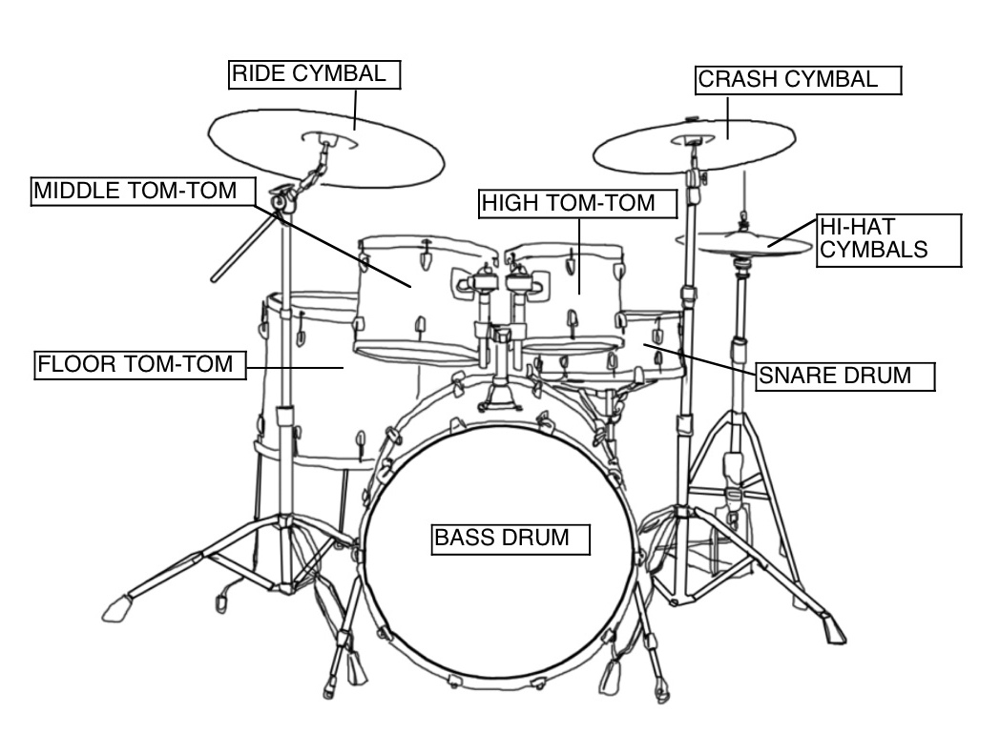

About Musicmap
Music is an art form and cultural activity whose medium is sound and silence, which exist in time. The common elements of music are pitch, rhythm, dynamics, and the sonic qualities of timbre and texture. Different styles or types of music may emphasize, de-emphasize or omit some of these elements. Music is performed with a vast range of instruments and vocal techniques ranging from singing to rapping; there are solely instrumental pieces, solely vocal pieces and pieces that combine singing and instruments. In its most general form, the activities describing music as an art form include the production of works of music, the criticism of music, the study of the history of music, and the aesthetic examination of music. Ancient Greek and Indian philosophers defined music as tones ordered horizontally as melodies and vertically as harmonies. Common sayings such as "the harmony of the spheres" and "it is music to my ears" point to the notion that music is often ordered and pleasant to listen to. However, 20th-century composer John Cage thought that any sound can be music, saying, for example, "There is no noise, only sound.
Musics
INDIAN CLASSICAL
Indian Classical
Indian classical music is a genre of South Asian music. It has two major traditions. The North Indian classical music tradition is called Hindustani, while the South Indian expression is called Carnatic. ... The Indian classical music has two foundational elements, raga and tala.
Different types of scales(raga)
Raag Marwa (hexatonic)
Raag Bhairav (heptatonic)
Raag Gaud-Sarang (oxatonic)
Raag Pahadi
Raag Bhairavi
Raag Yaman
Raag Bhimpalasi
Raag Kedar
Ornamentations(Alankar)
Meend (glissando)
A meend is essentially like a glissando in the sense that it is a smooth glide from one note to another, including all the relevant intervening pitches, and often non-intervening pitches as well.
Kan-Swar (grace notes)
Notes can be sung straight, but often in Hindustani classical music, we sing them with grace notes. This adds mellifluousness to the music.
Andolan (swing)
An andolan is a slow swing applied to a note. It is a very special feature of certain ragas and is only applied to specific notes in those ragas
WESTERN
Western music is a form of country music composed by and about the people who settled and worked throughout the Western United States and Western Canada. Directly related musically to old English, Scottish, and Irish folk ballads, Western music celebrates the life of the cowboy on the open ranges and prairies of Western North America.
Scale
Scales are typically listed from low to high. Most scales are octave-repeating, meaning their pattern of notes is the same in every octave.
Pitches
A single scale can be manifested at many different pitch levels. For example, a C major scale can be started at C4 (middle C; see scientific pitch notation) and ascending an octave to C5; or it could be started at C6, ascending an octave to C7. As long as all the notes can be played, the octave they take on can be altered.
Types of scale
Scales may be described according to the intervals they contain:
for example: diatonic, chromatic, whole tone
or by the number of different pitch classes they contain:
Octatonic (8 notes per octave): used in jazz and modern classical music
Heptatonic (7 notes per octave): the most common modern Western scale
Hexatonic (6 notes per octave): common in Western folk music
Pentatonic (5 notes per octave): the anhemitonic form (lacking semitones) is common in folk music, especially in oriental music; also known as the "black note" scale
Tetratonic (4 notes), tritonic (3 notes), and ditonic (2 notes): generally limited to prehistoric ("primitive") music
Monotonic (1 note): limited use in liturgy, and for effect in modern art music
FOLK
Folk music includes both traditional music and the genre that evolved from it during the 20th century folk revival. The term originated in the 19th century but is often applied to music that is older than that. Some types of folk music are also called world music. "Traditional folk music" has been defined in several ways: as music transmitted orally, music with unknown composers, or music performed by custom over a long period of time. It has been contrasted with commercial and classical styles.
Types of Indian folks
Bhavageete
Bhangra And Giddha
Bihugeet
Lavani
Uttarakhandi music
Dandiya
Pandavani
Bauls
Bhatiali
Garba
Dollu Kunita
Kolata/Kolattam
Veeragase
Naatupura Paatu.
INSTRUMENTS

Guitar
The guitar is a musical instrument classified as a string instrument with anywhere from four to 18 strings, usually having six. The sound is projected either acoustically, using a hollow wooden or plastic and wood box), or through electrical amplifier and a speaker.
Types of Guitar
Acoustic guitars
Renaissance and Baroque guitars
Classical guitars
Flat-top guitars
Archtop guitars
Resonator, resophonic or Dobro guitars
Electric guitars
Seven-string and eight-string guitars
Construction
Handedness
Modern guitars can be constructed to suit both left- and right-handed players. Normally, the dominant hand (in most people, the right hand) is used to pluck or strum the strings. This is similar to the convention of the violin family of instruments where the right hand controls the bow.
Piano
he piano is an acoustic, stringed musical instrument, in which the strings are struck by hammers. It is played using a keyboard,which is a row of keys that the performer presses down or strikes with the fingers and thumbs of both hands to cause the hammers to strike the strings.Piano is widely employed in classical, jazz, traditional and popular music for solo and ensemble performances, accompaniment, and for composing, songwriting and rehearsals.
Types of piano
Types
Grand
Upright (vertical)
Specialized
Electric, electronic, and digital
Mechanism
When the key is struck, a chain reaction occurs to produce the sound. First, the key raises the "wippen" mechanism, which forces the jack against the hammer roller. The hammer roller then lifts the lever carrying the hammer. The key also raises the damper; and immediately after the hammer strikes the wire it falls back, allowing the wire to resonate and thus produce sound.

Drum kit
A drum kit also called a drum set, trap set, or simply drumsis a collection of drums and other percussion instruments, typically cymbals, which are set up on stands to be played by a single player with drumsticks held in both hands and the feet operating pedals that control the hi-hat cymbal and the beater for the bass drum. A drum kit consists of a mix of drums and idiophones most significantly cymbals but also including the woodblock and cowbell.In the 2000s, some kits also include electronic instruments and both hybrid and entirely electronic kits are used
Standard moden kit
A snare drum, mounted on a stand, placed between the player's knees and played with drum sticks
A bass drum, played by a pedal operated by the right foot, which moves a felt-covered beater
One or more toms, played with sticks or brushes
A hi-hat, played with the sticks, opened and closed with left foot pedal
One or more cymbals, mounted on stands, played with the sticks
Accessories
Sticks
Muffles
Stick holder
Sizzlers
Cases
Microphones
Monitors
Bass drum gear
Gloves
Drum screen
Carpets
Practice equipment
Tuning equipment
Live Concerts
Upcoming Concerts!!!
Promise Land
SAT JANUARY 21, 2017 - 12:00 PM
Kitty Su
Mumbai, India
The Thrillseekers
SUN JANUARY 22, 2017 - 7:00 PM
Beach House
Pune, India
DJ Carnage
FRI JANUARY 20, 2017 - 9:00 PM
Playboy
Mumbai, India